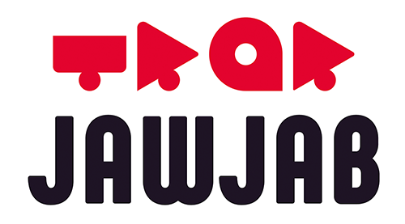

Listen first
Understand the issue before reaching for a fix.
IT support technician and web developer. I troubleshoot with care, explain things clearly, and build thoughtful digital tools.
From a workstation that needs saving to a web project that needs direction, I like finding the clear next step. My experience spans IT support, hardware repair, access management, and web development — always with the person on the other side of the screen in mind.
Understand the issue before reaching for a fix.
Turn technical steps into plain language people can use.
Document, verify, and close the loop with care.
Hands-on support experience, backed by a developer's understanding of what happens behind the screen.
Calm, methodical troubleshooting across people, devices, and workplace systems.
Practical coding skills for building, understanding, and improving digital experiences.
From a global game studio to a landmark hotel, I have helped teams keep their technology moving.
Agence de mobilité durable · Montréal, QC
Track files and coordinate with field operators, document interventions, and guide citizens through requests with clear, professional communication.
BIXI Montréal · Montréal, QC
Diagnose and repair bikes and stations, help users with terminals and the mobile app, and report technical issues so equipment gets back into service.
Fairmont Le Manoir Richelieu · Charlevoix, QC
Supported staff workstations and peripherals across the property, configured devices and software, and contributed to a website update that enabled online appointment booking.
Couche-Tard · Montréal, QC
Supervised and trained staff, coordinated daily tasks and schedules, managed cash and inventory, and resolved customer concerns.
Ubisoft · Casablanca-Settat, Morocco
Provided on-site and remote support in a demanding production environment. Diagnosed hardware, software, and access issues; prepared workstations; managed accounts and tickets; and documented fixes for the team.

Jawjab · Casablanca, Morocco
Installed computer hardware, servers, and operating systems; troubleshot network and device issues; and documented configurations and interventions.
Box Office Clerk · Centre Bell occasional
Coursework and labs that connect the dots between code, data, and the systems people use.
Configured workstations, managed user accounts, and worked through simulated support incidents.
Built Python scripts for processing and validating data, with an emphasis on dependable results.
Worked through requirements, data modeling, interface development, and testing in Java.
Formal training in software and web development, with current studies in computer science.
French · Native / bilingual
English · Very good
Université du Québec à Montréal · Montréal
Institut Teccart · Montréal
Lycée Technique Settat · Morocco
Comparative evaluation: equivalent to a Québec technical DECI'm open to IT support and technician opportunities in Montréal. If you need someone who can listen, troubleshoot, and follow through, I'd be glad to connect.
Get in touch